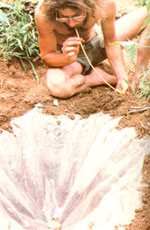

At Home In The Wilderness
By the Mother Earth News editors
November/December 1981
Tom Brown, Jr. was brought up in the ways of the woods by a displaced Apache named Stalking Wolf. Today, he is one of our country's leading outdoor authorities, author of The Tracker and The Search, and head of the largest tracking and wilderness survival school in the U.S. (for information, write Tom Brown, Jr., Dept. TMEN, Box 173, Asbury, New Jersey 08802). And that's not all! Tom has agreed to do a series of special features for MOTHER, articles that will help all of us learn how to survive-in comfort!-in the wilds. With the tracker's guidance, we can all become more ...
Many early native American people believed that water was the Earth Mother's blood. And the purpose of the sacred substance-in the minds of such individuals-was to give life to all the world's beings . . . therefore, men and women were expected to be careful to avoid dirtying it in any way. Unfortunately, in these "modern" times, our feet have become far removed from the earth, and much of humankind has lost its respect for water. Hence, more and more pollutants are being dumped into our aquatic reserves . . . and it's hard nowadays to find a stream, lake, or river-anywhere in this country-that hasn't been contaminated.
In today's world, then, a survivalist who needs water faces a twofold task: finding the liquid and rendering it potable. In spite of having to take purification precautions, though, obtaining good water is-with practice-perhaps the easiest survival skill to master. Yet the simplicity of learning the needed techniques does not take away from their importance, and-although people have survived for days without drinking-I sincerely recommend that you not go more than 24 hours without water.
Always remember, however, not to take chances on questionable drinking sources. (Even streams in remote areas may be polluted if, say, a timber company has sprayed the forest to get rid of insects or broadleaved plants.) The possibilities of physical harm, dehydration, and the draining of vital energy resulting from contamination just aren't worth the risk. A group of students at my school learned this lesson well when one of their instructors drank some questionable water. Within four hours he was struck by severe gastrointestinal problems. In addition to having diarrhea and an upset stomach for four days, he became dehydrated, weak, and feverish . . . and his health didn't improve until he was treated by a doctor. If he had been in a real survival situation, that sickness could have meant his death.
In this article I'll cover four techniques for obtaining water in the wild . . . ranging from the one I recommend least heartily to my favorite method. If you practice and follow the courses of action described here-always working toward becoming part of the natural world-you'll never find yourself without this most precious resource.
NATURAL CATCHES
Any landscape feature that holds or channels water is considered a natural catch. Finding such a source is usually the easiest way to obtain water. Yet by and large I don't recommend this technique to my survival students.
It's difficult, you see, to locate natural catches that haven't been tainted by chemical sprays. Furthermore, many of our waterways-even those in national parks-are also infected with carriers of amoebic dysentery, heartworm, salmonellosis, and hepatitis.
Still, provided you take proper precautionary and purification measures, some natural catches can be viable drinking sources. Here's a list of the most common of these, with information on how to use them safely.
Water channels and holders: This category includes rivers, lakes, ponds, and streams. The safest catches, by far, of the four-and the only ones I advise using-are streams. Any drinking water drawn from such a source should-of course-be clear and running. (Generally speaking, the higher up a stream you go, and the faster it's running, the safer the water will be for drinking.) Examine the small water channel before you sip, though. You should see no signs of man's presence but, instead, plenty of aquatic vegetation, fish, small insect life, and-along the banks-animal tracks. Remember, however, that such prints don't necessarily mean the water is safe for humans. Wild creatures frequently drink from very polluted water sources-and even eat deadly poisonous plants-with no apparent ill effects.
Furthermore, I don't advise drinking directly from a stream becauseby doing so-you may stir up the bottom and ingest some debris. However, you can easily improvise a containera rock basin or a hollowed log-to collect the fluid. To make a rock cup, simply chip a depression out of a very soft stone with a smaller, harder rock. (You'll lessen your chance of cracking the cup if you use soft glancing blows.)
You can turn a log or stump into a container by using hot coals to burn a hole in the wood. (Blow on the embers to expedite the process.) After the coals have burned down, it should be easy to scrape the charred wood out with a knife or sharp rock. A 16-ounce cup can be made from a soft wood (such as pine) in less than an hour by this method, and a larger one-gallon container can be burned out just as quickly if you use a lot of coals. (Be careful, of course, not to make your container from part of a poisonous tree-such as a yew or some varieties of locust-because the wood's toxins may spoil the liquid.)
If the stream's water is muddy or has a lot of suspended particles, you can filter it. A piece of cloth will do fine for this job. You can also make a cup-shaped strainer from bunches of matted bark strips or nonpoisonous grass. Or you can simply put clean sand in a hollow log with a grass mesh bottom, rinse the sand until water coursing through comes out clear, and then pour your liquid through that mineral filter.
As the last step, you should boil the collected stream water for 20 minutes to purify it. (Many wilderness experts recommend cooking the liquid for only five minutes, but that shorter processing will not kill some of the spore-stage bacteria that can infest drinking water.) You can accomplish this task by seither heating the water over a-fire or-if you don't have a suitable pan or a concave stone-dropping red-hot rocks, one by one, into your wooden water container until the liquid has been fully purified. (Caution: Use only rocks found on high ground. Stones from lowlands or waterways may contain trapped moisture and explode when heated.)
Always remember, though, that while long boiling neutralizes any biological contaminants, it does not destroy chemical pollutants.
Stone and wood catches: A depression in a rock-sometimes called a kettle-or a shallow hole in the nook of a tree or stump may contain water. Such pockets are numerous in both forests and deserts, but these are generally undesirable catches because the water doesn't last long before it either evaporates or is contaminated by bacteria.
If you do want to drink from a pocket of water in a stump or a limb cavity; first make sure the tree is not poisonous. Also, check to see that no animals live in the water, that a profusion of algae doesn't grow there, and that it hasn't picked up a bad taste from wood tannins and resins. (Rock kettles, too, can contain toxins if the collected water has run down over higher poison-containing stones. This is especially common around old mining areas.)
Soak up the water from the catch with a piece of cloth or some dried grasses, wring it out into a container, then filter and boil the fluid as described in the last section. (A second reminder, though: Never use plants that may be poisonous, for either collecting or filtering water.)
Lowland catches: These are merely areas where the soil is soft and damp. To collect the moisture, simply dig a hole until water begins to seep into it, and gather your liquid with a piece of cloth or dried grasses. Again, wring the absorbing material out over a container-repeating the process until you've accumulated the water you need-then filter and purify it. The work will often go more smoothly and efficiently if you dig and draw from more than one hole at a time.
In some areas, particularly sandy bottomlands, ravines, and dried riverbeds, the water is usually pure and-in an emergency where purification is impossible-can be drunk as it's gathered. At the opposite extreme, though, I advise completely avoiding catches containing ocean, cave, timberland, or farm water . . . any of which may well contain chemical pollutants.
WATER FROM PLANTS
Plants can also provide water . . . and such supplies usually don't contain the pollutants that natural catches can harbor. However, since most vegetation doesn't have enough available water to serve as a complete survival source, plants are best used to stay the pains of thirst or to obtain temporary, "quick relief" emergency water. In addition, it takes a long time to collect liquid from all but a few plants . . . many such sources are good only during certain seasons of the year . . . and you have to be careful never to utilize vegetation from a sprayed area or roadside.
Hardwoods: In early spring, walnut, maple, birch, and hickory trees can all serve as sources of water. To get the fluid, you simply tap the treeas Vermont maple-syrup makers do-by boring a half-inch or quarter-inch hole into the trunk with a knife or sharp rock, inserting a hollow reed, and collecting the thin sap in a bark or log cup. Alternatively, you can cut through the bark with diagonal slashes. Make sure that you cut into the sap wood, or cambium, that lies just under the bark and that you don't kill the tree by cutting all the way around it.
Since water gathered by this method contains a high concentration of sugar, drinking large amounts of it can cause an upset stomach or cramps. For the same reason, the liquid tends to spoil when it's not drunk soon. (I like to use it to brew a presweetened herbal tea! )
Sycamore trees can be tapped in the same manner as can the hardwoods mentioned above. The water from this tree, however, can be harvested any time of year except the dead of winter and, since it doesn't contain much sugar, can be consumed in quantity or stored for a few days.
Thistle: Ail common species of North American thistle can provide water. (In my experience the bull thistle yields the most, and best-tasting, nourishment.) To get the juice, simply peel the thorns off young stems and leaves and eat the watery food like celery. (In fact, my students fondly call the thistle "survival celery" and find it a refreshing snack on hot trips.)
Since thistles supply only a meager portion of liquid, though, they're best used to quench a burning thirst or to keep you going until other water sources can be found. I did once get over ten ounces of water-during a survival camp-out-by crushing and filtering a dozen thistle plants. But I don't want to use this method again unless my life is on the line. It requires killing too many of my plant brothers.
Cactus: Cactuses are another "edible water" source. My favorite variety is the common prickly pear. It has a high water content and is also a good vitamin-laced food source. Folks who find the flavor or texture of the pulp objectionable can simply crush, squeeze, and strain the plant for its water.
SOLAR STILL
A build-it-yourself solar distillery is one of the best ways to obtain drinking water in areas where the liquid is scarce. Developed by two doctors in the U.S. Department of Agriculture, it's an excellent water collection device. Unfortunately, you must carry the necessary equipment with you, since it's all but impossible to find natural substitutes. The only components required, though, are a 5' X 5' sheet of clear or slightly milky plastic, six feet of plastic tubing, and a container-perhaps a collapsible drinking cup-to catch the water. (You can, of course, fashion some sort of receptacle in the wilderness . . . from stone or wood.) These pieces of gear can be folded into a neat little pack and clipped onto your belt.
To construct a working still, use a sharp stick or rock to dig a hole four feet across and three feet deep. (Try to locate the excavation in a damp area, gully, or river basin to increase the water catcher's productivity.) Place your cup in the deepest part of the hole. Then lay the tube in place so that one end rests all the way in the cup and the rest of the line runs up-and outthe side of the pit.
Next, cover the hole with the plastic sheet . . . securing the edges of the material with dirt and weighting the sheet's center down with a rock. The plastic should now form a cone with 45°angled sides. The low point of the sheet must be centered directly over, and no more than three inches above, the cup.
The solar still works by creating a greenhouse under the plastic. Ground water evaporates and collects on the sheet until droplets form, run down the material, and fall off into the cup. When the container is full, you can suck the refreshment out through the tubing, and won't have to break down the still every time you need a drink.
A good solar still, located in a damp area, should keep collecting water for quite a few days. In drier regions, such as deserts, I recommend making the hole four feet deep and placing crushed herbaceous plants (cactus and thistle are good choices) in the pit to increase the still's output. I once used such a setup in Death Valley and was able to obtain a gallon of drinking water a day! Be careful to use only edible plants for such water boosters, of course, as many poisons will evaporate and drip down into your cup even more rapidly than will water.
For the same reason, I don't recommend using a solar still to treat chemically contaminated water. The device does an excellent job of purifying bacterially polluted water, though: Just pour the liquid onto the surface soil next to. the plastic covering. The water will then filter through the ground and be distilled into a quite safe drinking supply. In fact, using this technique, the solar still will even purify human urine!
DEW
Collecting dew is probably the simplest, and safest, way to obtain potable water in a survival situation, and it's the method I most frequently use and recommend to my students.
The only equipment needed to gather dew is a rag or a piece of clothing . . . or a handful of dried, nontoxic, grasses. Just wipe the moisture from the landscape and wring the liquid into a container or your mouth. Collect the condensed droplets from grass, rocks, leaves, and even sand. (Do not, of course, gather moisture from poisonous plants, near a highway or a city, or in any area that's been sprayed with chemicals.)
You'll have to get up early and work hard (dew doesn't stay around very long!), but don't let the simplicity of this method lead you to believe that it's ineffective. Students of mine have collected more than a quart a day in some of the hottest Southwest deserts . . . and at my farm in New Jersey, two pupils once used this technique to fill a 20-gallon garbage can with water in less than two hours!
By the way, although dew is an excellent water source as is, the same cannot be said for snow. Now whenever I tell my students to avoid eating snow, they look at me as if I were crazy, but the fact is that it takes a lot of body energy to melt snow . . . and, in cold weather, a survivalist can't afford any extra drain on his or her stamina.
It's best to melt snow or ice and warm the water slightly before ingesting it. You can do so by building afire and digging depressions in the snow nearby to collect the fluid . . . dropping a heated rock into a container of snow . . . or just putting a flake-filled cup in a snow pit and covering it over with pine or fir boughs (sunlight on the dark needles will eventually melt the snow in the cup).
BE CAREFUL, BE SAFE
As you must be beginning to realize, water can be simply and safely obtained in any survival situation . . . provided you follow the necessary precautions. Whenever you examine a newfound supply, ask yourself, "Would I stake my life on this water?" . . . because that's what you'll do if you drink it!
If you find yourself in a situation where you have a limited reserve of water, conserve your supply to the utmost by following these few simple rules: Don't eat anything if you don't have water to drink with it . . . by consuming food you'll burn up your body's supply of the vital fluid all the quicker. Travel only during the coolest hours and walk at an easy pace so that precious moisture doesn't get used up through perspiration. Don't drink urine (unless you've first purified it by means of a solar tilt) because doing so will increase your body's rate of dehydration. And last, try to store as much water as you can in your stomach. People have died with full canteens as a result of trying too hard to conserve their water supplies.
A SURVIVAL KIT
In the section of the accompanying article concerning solar stills, you no doubt noted that I suggested carrying a small belt pack containing the materials needed to construct the device. I'd like to tell you how a belt pack can be turned into a very workable survival kit that's well worth taking along on any outing. Although a well-trained survivalist can live through most situations with few or no aids, I find such a packet to be a great "insurance policy" . . . especially for folks who are traveling with children. Some backpackers even wear these kits on their belts all the time, since a simple side excursion without one's main gearcould turn into a survival situation.
Here are the minimum equipment requirements fur a belt pack:
5' x 5' sheet of clear or slightly milky plastic
candle,
compass
6 ft' plastic tubing
pocketknife
collapsible cup
50' monofilament fish line (forwaterproof matches snares and emergency cordage)
All these items can be neatly placed in a standard 4" X 6" X 10" belt pack. Other items of your preference can he add ed, such as a solar blanket, fishhooks,a small first aid kit, or water purification (iodine) tablets . . . which are not, however, effective against either hepatitis or chemical contamination dust remember though: I survival kit does you to good of all in an emergency situation it it', been left behind in a closet It or backpack!
 |
|
|
|
 |
|
|